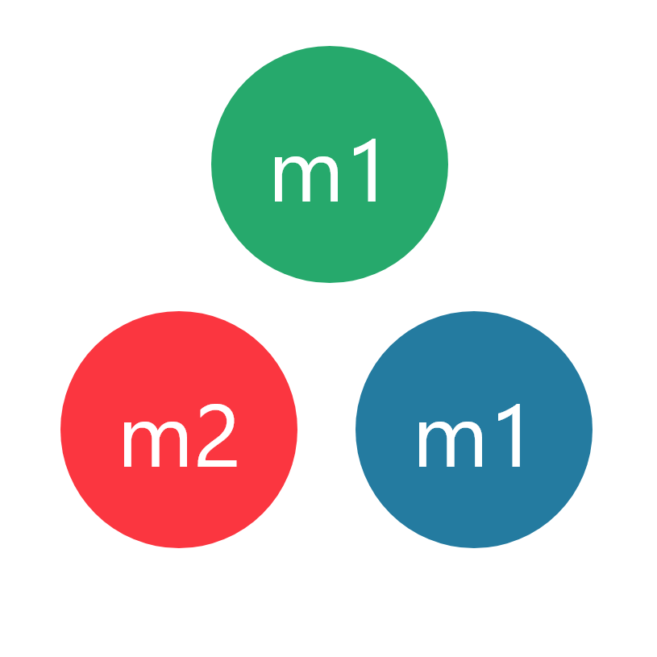

\[\begin{aligned} E = m c^2 \\ \end{aligned} \]
\[\begin{aligned} E = m c^2 \\ \end{aligned} \]
- E - energy
- m - mass
- c - speed of light
\[\begin{aligned} E = m c^2 \\ \end{aligned} \]
- E - energy
- m - mass
- c - constant (large)
\[\begin{aligned} m \nRightarrow E \\ \end{aligned} \]
\[\begin{aligned} m = \frac{E}{c^2} \\ \end{aligned} \]
\[\begin{aligned} M \neq m1+m2+m3 \end{aligned} \]
\[\begin{aligned} M = m1+m2+m3 \tiny{+m_{extra}} \end{aligned} \]
0.000000000000000001%
Why?
It resists acceleration
(inertial mass)
It interacts with gravity
(gravitational mass)
\[\begin{aligned} F = m a \end{aligned} \]
Heavier => difficult to move

The End
Sources
- The Real Meaning of E=mc² - Space time (Dr. Gabriel Perez-Giz)
- The True Nature of Matter and Mass - Space time (Dr. Matt O'Dowd)